Page 1: The Happy Network
Panel 1 — Establishing Wide Shot
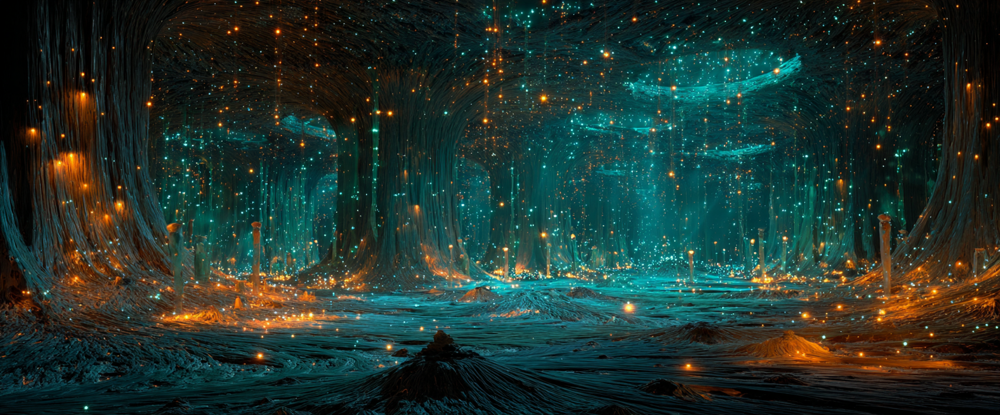
Underground. A gorgeous section of the Sillium in full health. Mycelium threads pulse with cyan and amber light. Tree roots descend like cathedral pillars. Small spore particles drift like underwater snowflakes.
Beneath every forest, there's a network.
It's been here for 450 million years. And today, it's busy.
Panel 2 — Medium Shot
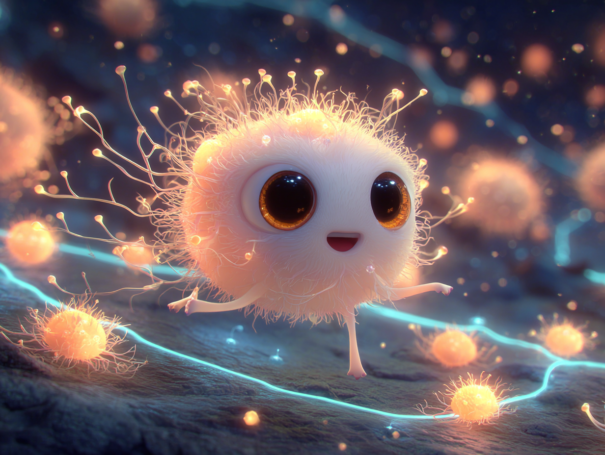
SPORA travels along a major thread, bouncing gently. Pale pink-white, enormous amber eyes, filaments flickering with soft light. She looks happy.
SPORA (thought): Morning delivery route — check! Three nodes connected — check! Only tripped twice — personal best!
Panel 3 — Close-Up
Spora pauses at a junction node. Places her tendril against a thread, eyes closed, feeling the network's pulse. She smiles.
SPORA (thought): The network sounds happy today.
Panel 4 — Expression Shifts
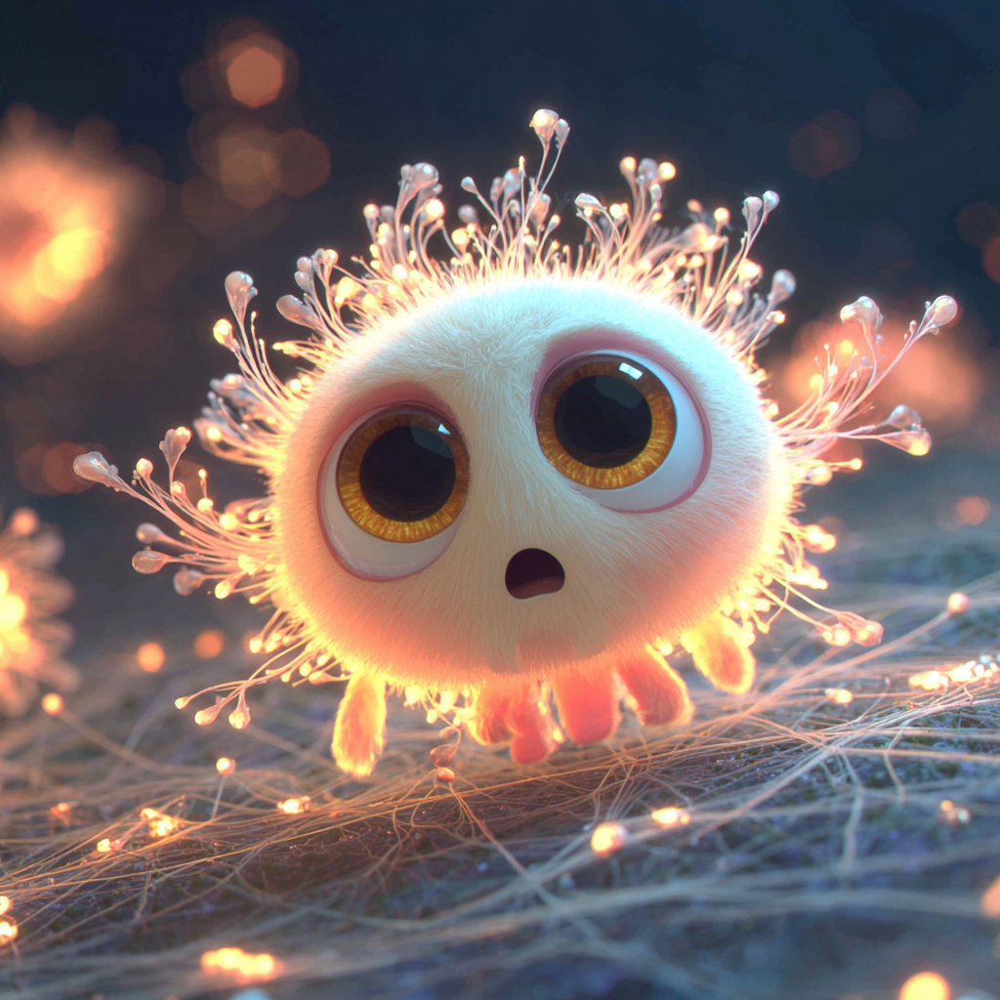
Her eyes snap open. Filaments flare. One of the threads is dimming. The light is stuttering. Fading.
SPORA: Wait — what's that?
fzzzt... fzzzt...
Page 2: Something's Wrong
Panel 1 — Wide Shot
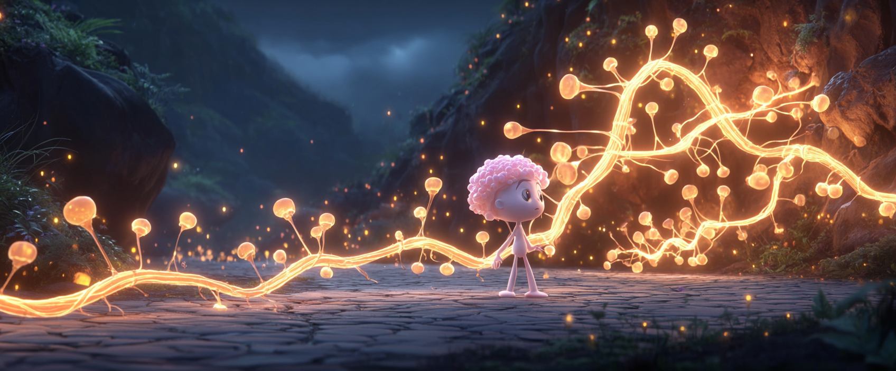
Spora follows the fading thread deeper. With each step, the light gets dimmer. Threads go from vibrant cyan to pale, sickly gray.
When a thread goes dark, it means something's losing its connection.
Panel 2 — Discovery
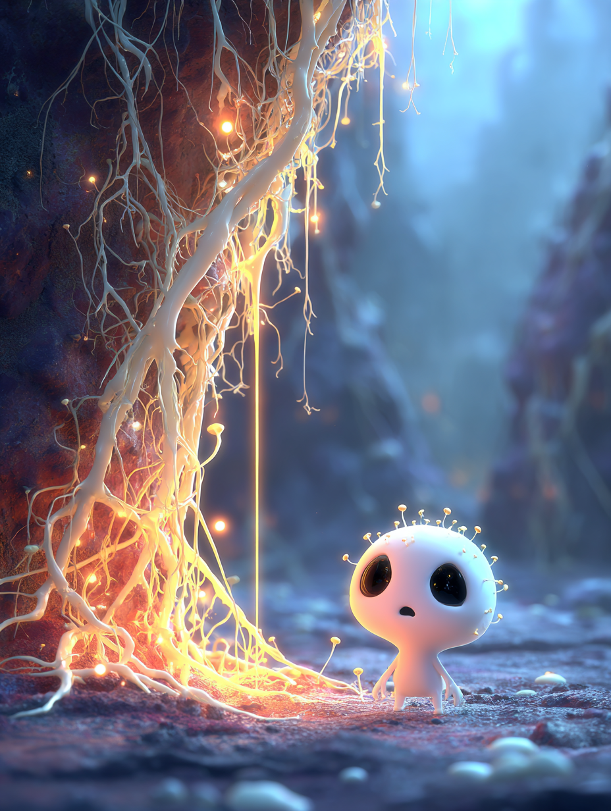
Spora arrives at the end. A tree's root system descends — but the roots are pale, almost white. The connection point barely flickers.
SPORA (whispered): Oh no...
Panel 3 — Close on Root
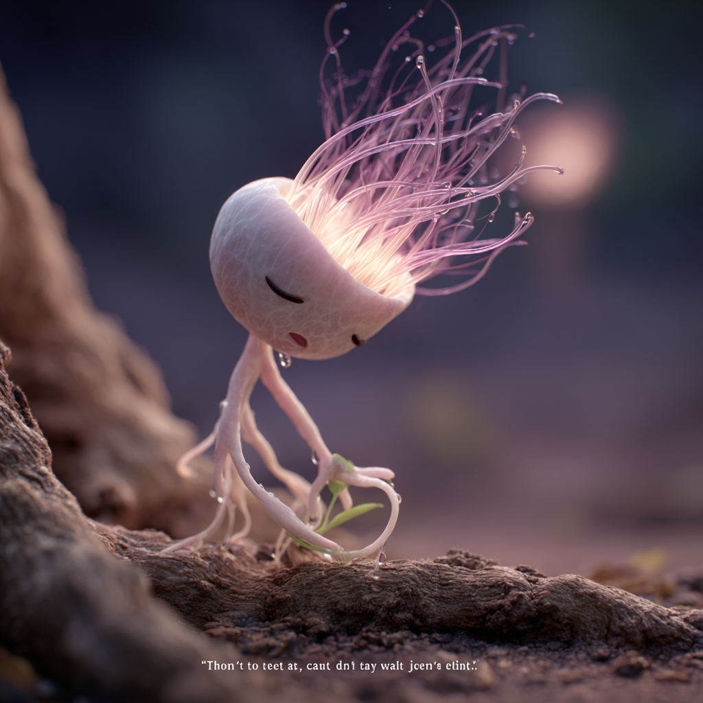
Spora presses her tendril against the struggling root. She "listens." The message visualized as faint, wavering text:
ROOT SIGNAL: ...thirsty... can't reach... water... too... deep...
Panel 4 — Determination
Spora pulls back. Filaments pulsing amber and pink. Fear shifts to determination.
SPORA: You need water. Okay. I can — I'll figure this out.
Page 3: The Attempt
Panel 1 — Action Shot
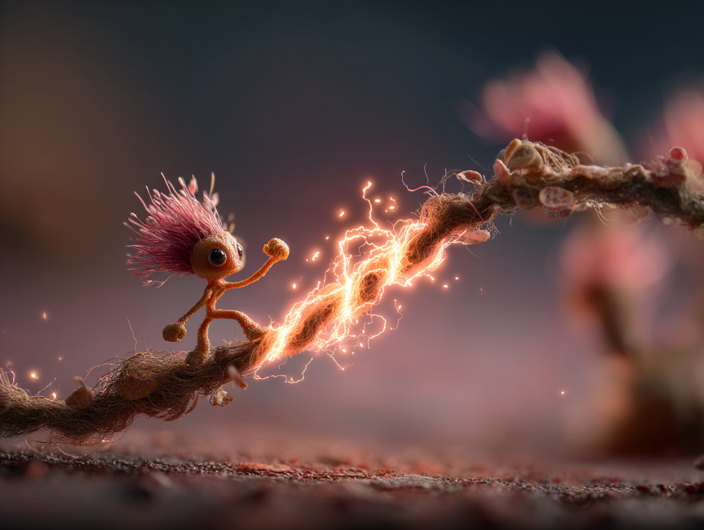
Spora tries to push nutrients through the thread herself. Both tendrils planted, she PUSHES. Her body glows brighter with effort.
hhhnnnnn...
SPORA: Come on... come ON...
Panel 2 — Strain
Closer — Spora's face contorted with effort. Luminescent sweat beads. The thread brightens slightly but fades again.
SPORA: Almost... just a little more...
Panel 3 — Failure
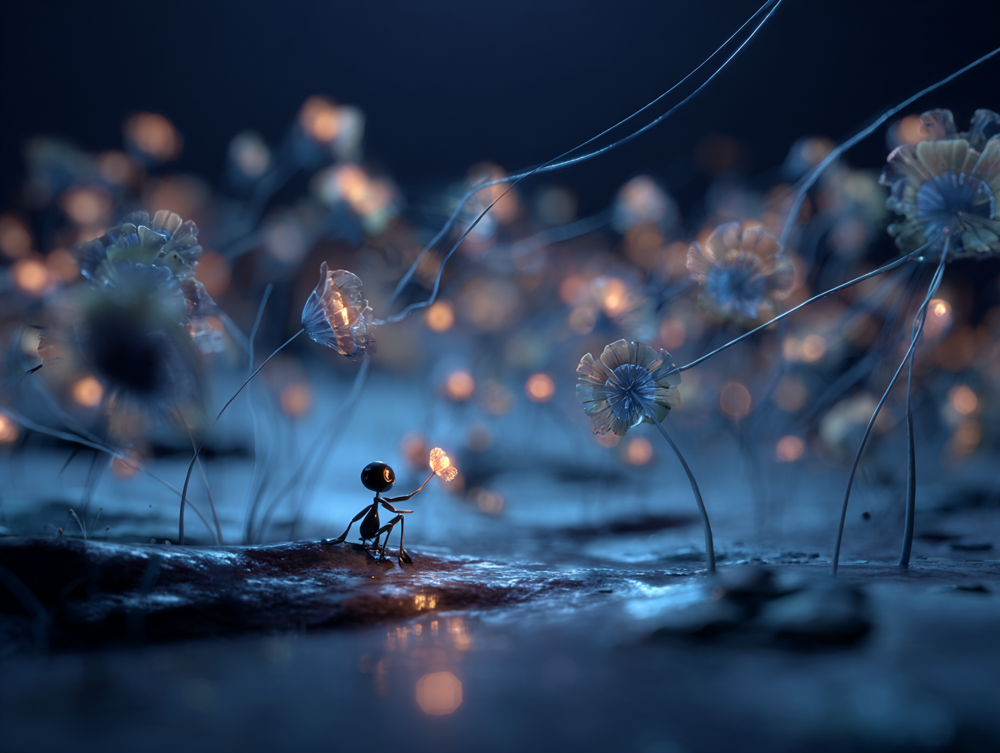
Spora collapses, exhausted. The thread is exactly as dim as before. Filaments droop. She's too small.
SPORA (small, defeated): I can't do it.
Panel 4 — Realization
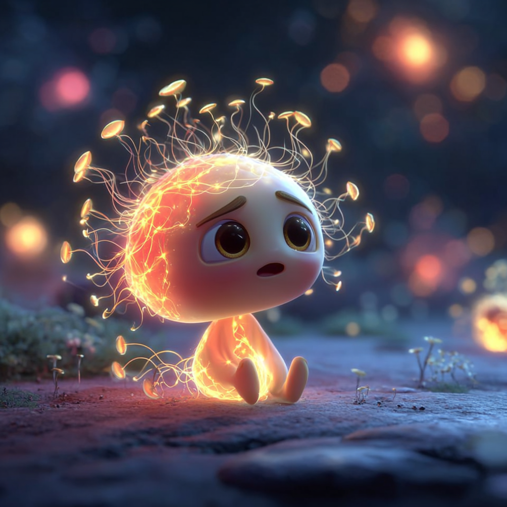
Beat. Spora sits looking up at thousands of connections. All bigger than her.
SPORA (thought): I can't do it ALONE.
Page 4: Finding Fun-Gus
Panel 1 — Speed Lines
Spora RACES through the network — a small pink streak. She bounces off nodes, slides down curves, leaps gaps.
zip zip zip
Panel 2 — Arrival
She skids to a halt at a major hub. FUN-GUS stands at center, monitoring threads. Messages pulse past in multiple colors.
SPORA (out of breath): Fun-Gus! Fun-Gus, I need help!
FUN-GUS (calm but attentive): Whoa — slow down. What happened?
Panel 3 — Spora Explains
Spora gestures wildly, filaments flickering. Faint holographic memory-flashes appear around her: the dim thread, pale roots, fading signal.
SPORA: There's a tree — on the East Ridge — its connection is dying! I tried to push nutrients through but I'm too small —
Panel 4 — Fun-Gus Responds
Fun-Gus places a gentle hand on Spora's cap. She stops. He smiles — knowing.
FUN-GUS: You found it. You listened. And you came for help.
FUN-GUS: That's three good decisions in a row.
Page 5: The Lesson
Panel 1 — Eye to Eye
Fun-Gus kneels to Spora's level. Warm but serious.
FUN-GUS: Spora, you said you couldn't do it alone. You're right. One thread can't carry enough water for a whole tree.
Panel 2 — Wide Shot
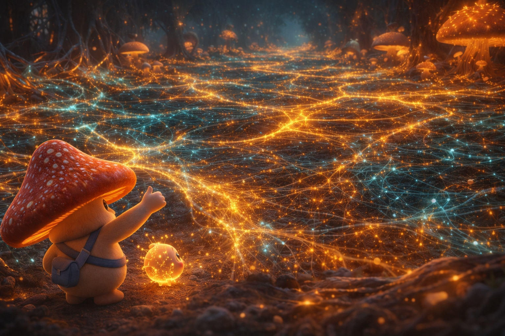
He sweeps his arm across the vast network — threads stretching everywhere, pulsing, connecting hundreds of trees and fungi.
FUN-GUS: But what about ALL the threads?
Panel 3 — Close on Spora
Her eyes widen. Filaments stand upright. The idea lands.
SPORA: You mean... if EVERYONE sent a little...
Panel 4 — Fun-Gus Grins
He grins. Touches a thread. It glows amber — composing a signal.
FUN-GUS: Now you're thinking like a network.
Page 6: The Call
Panel 1 — The Signal
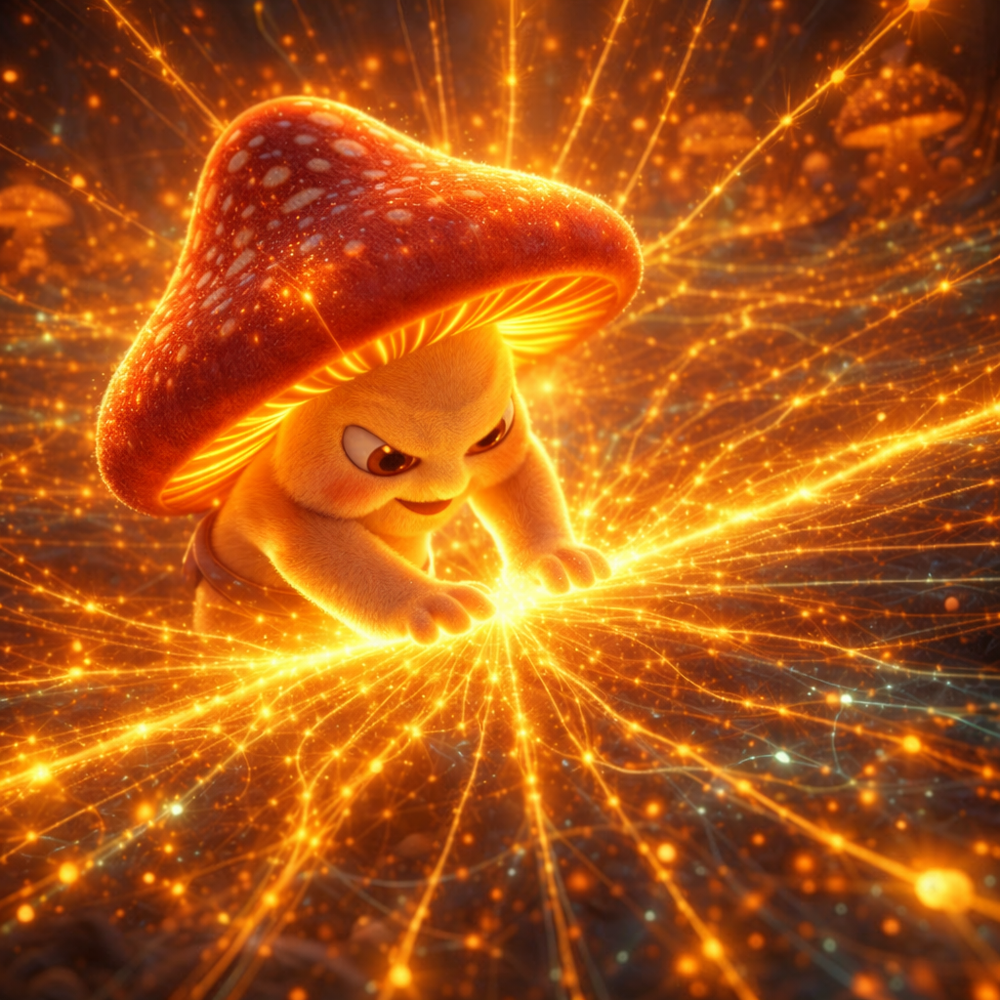
Fun-Gus places both hands on the central thread. His whole body glows amber. A massive pulse launches down every thread simultaneously.
WHOOOOOM
Panel 2 — Network Map View
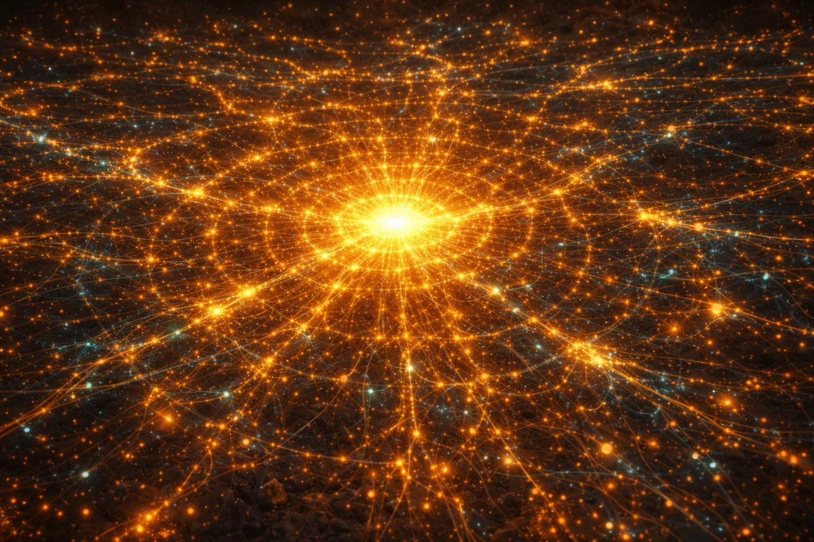
Bird's-eye view of the network. The pulse radiates outward in concentric waves, lighting up every junction.
FUN-GUS: "Calling all nodes. East Ridge tree losing connection. Send what you can."
Panel 3 — Reactions (4 mini-panels)
Rhiza at her post between roots and threads. Nods with determination.
RHIZA: On it.
Puff receives the message, lights up. Golden spores billow.
PUFF: A MISSION! I LOVE MISSIONS!
Lumos in a dark tunnel, nervous but glowing brighter.
LUMOS: The East Ridge path is dark... I'll light the way.
Birdie at her launch station, loading spore-packets. Checks clipboard.
BIRDIE: Target coordinates received. Preparing payload.
Page 7: The Response — FULL SPLASH PAGE
Full Page Splash — The Most Beautiful Image in the Comic
The network RESPONDS. From every direction, streams of luminous resources converge toward the East Ridge:
- Amber streams: Nearby trees sharing sugar
- Blue streams: Fungi channeling deep water
- Golden bursts: Puff's spore-messages racing ahead
- Cyan glow: Lumos lighting the dark pathways
- Precise arcs: Birdie's nutrient packets in perfect trajectories
At the center: the struggling tree's roots, now surrounded by incoming help. Spora stands at the base, tiny against the spectacle, watching in awe.
No single thread could carry enough.
But the network isn't a single thread.
The network is EVERYONE.
Page 8: The Rescue
Panel 1 — Streams Arrive
Resource streams reach the roots. Rhiza stands at the junction — translating, directing.
RHIZA: Sugar from the south oaks — routing to primary roots. Water from the deep wells — routing to fine roots.
Panel 2 — Roots Come Alive
Pale roots transform. Color flows back — ghostly white to warm tan to healthy golden-brown. The connection stabilizes.
THUMMM
Panel 3 — Cross-Section View
Split panel: underground below, surface above. Above ground, a young birch with wilted leaves. As nutrients arrive, leaves uncurl. A new bud appears.
Above ground, a tree that was dying... started to live again.
Panel 4 — Spora's Face
Close-up. Eyes reflecting golden light. Filaments steady, glowing amber. She's smiling.
SPORA (whispered): We did it.
Page 9: Celebration
Panel 1 — The Cheer
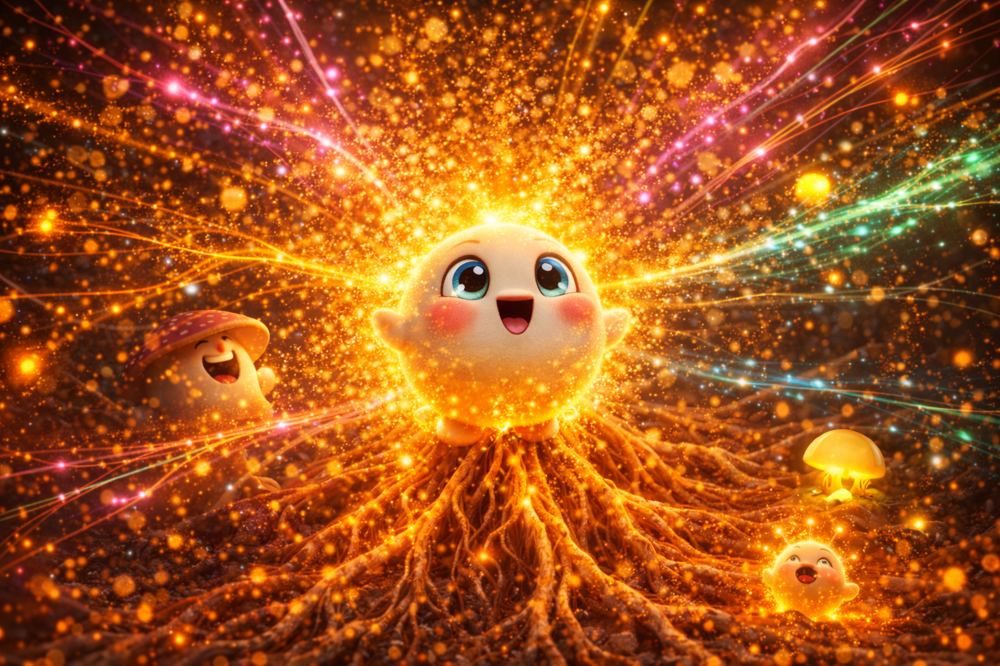
The network CELEBRATES. Pulses of joyful color race through every thread. Puff EXPLODES — the biggest burst yet.
PUFF: WE DID IIIIIIT!
POOF!
Panel 2 — The Team
The whole group at the healthy root junction. Fun-Gus has his arm around Spora. Lumos glowing from happiness. Chanty composing story-dust. Birdie with clipboard.
CHANTY: "The Day the Network Saved the Thirsty Tree." First draft by sundown.
BIRDIE: All deliveries confirmed. Zero misses.
LUMOS: That was... actually not that scary?
FUN-GUS: You know who found the tree, right?
Panel 3 — Fun-Gus and Spora
Close on them. He's looking at her with pride. She's embarrassed but glowing.
FUN-GUS: None of us are strong alone, Spora. But together? We're a forest.
Panel 4 — Spora Responds
Spora looks up. Filaments steady. Confident for the first time.
SPORA: I couldn't fix it by myself. But I could FIND it. And I could ask for help. Maybe that's enough.
FUN-GUS: That's everything.
Page 10: Closing
Panel 1 — Spora Alone
Later. Celebration moved on. Spora sits at the healed roots, bathed in warm amber light. Connection pulses strong and steady.
Panel 2 — Sending a Message
Close on her tendril touching the thread. A small golden message rises through the root system.
SPORA (small and warm): You're not alone anymore.
Panel 3 — Above Ground
The young birch in afternoon sunlight, leaves full and green. At the base, where roots meet soil, the faintest glow — just visible if you know where to look.
In Sillium, no one is ever alone.
Panel 4 — Final Wide Shot
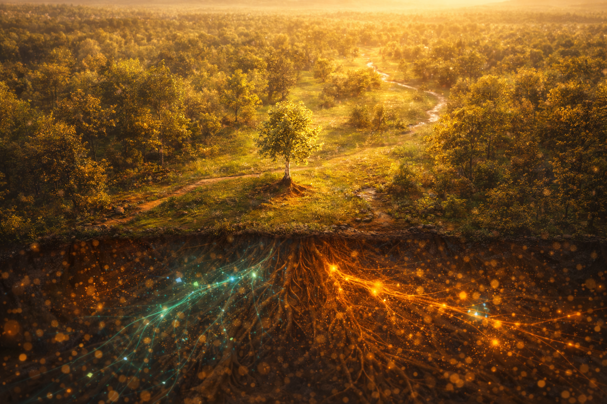
Widest possible shot. The entire forest from above. Trees, trails, streams. And beneath the surface — the faintest cyan and amber glow visible through the earth.
The network was here before us. It'll be here after us. And right now — right this second — it's working.
You just have to know where to look.
Back Matter: The Real Science
Trees really do share water! In real forests, mycorrhizal networks redistribute water from trees with deep roots to trees with shallow roots. During droughts, this sharing can mean life or death for young trees.
Mother trees are real! Research by Dr. Suzanne Simard proved that older "mother trees" preferentially send nutrients to their offspring and struggling neighbors through fungal networks.
Chemical distress signals travel underground! When a tree is stressed, it releases compounds that travel through fungal threads. Neighbors can prepare defenses before the threat reaches them.
The network coordinates responses! Multiple studies show forests respond as interconnected systems, not individual trees. Resources flow toward need, guided by chemical gradients.